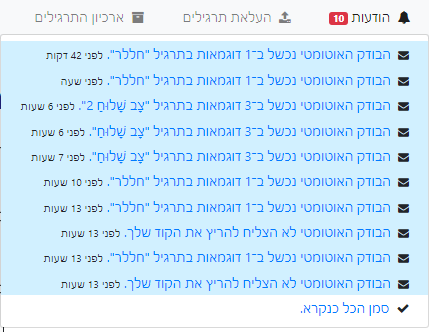

תקשיב(ו), אני הצעתי להוסיף תיבת טקסט, לא להחליף את העלאת הקבצים. זה יעיל אם נגיד צריך להעלות תיקון לאחד מהתרגילים ולא רוצים עכשיו להסיר את ה - “#Upload” מכל שאר התרגילים, או חלילה לשכוח להסיר כזה מאחד התרגילים ולדרוס בטעות את הבדיקה שנעשתה כבר.
אה אוקי הבנתי אותך.
או לחלופין להוסיף # מסויים לקוד ככה שמערכת תדע שהיא צריכה לבדוק רק את התרגיל הזה ולהתעלם מהשאר.
מקפיצה את זה ומוסיפה את להוסיף סוג כפתור לבדיקות עם שגיאות - מערכת ההודעות נחמדה אבל לדעתי זה יהיה יותר נוח לראות ויזואלית באילו תרגילים יש שגיאות (אולי גם לעשות בסוגריים את כמות השגיאות). כרגע בהודעות יש חזרה על אותם תרגילים ופיצול לפי זמן, שזה נחמד כדי לעקוב אם יש נכנס משהו חדש אבל מציג באופן קצת מסורבל מה כן צריך לתקן (כמו בתמונה למטה).
גם יכול להיות שאני טועה אבל נראה שההודעות מציג רק את ה-10 החדשים ביותר למרות שיש יותר מ-10 הודעות חדשות שלא נקראו(כלומר הודעות 11+ נעלמות בלי שהן נקראות)

לייק 1
הגבלנו את זה ל־10 כי לא חשבנו שנגיע ליותר, ולא רצינו להציף את החניך או את ה־DB 
יש סיכוי לא רע שנגיע להצעות האלו בשבוע 9/10
3 לייקים
האם יש אפשרות להציג רק את ההודעה החדשה ביותר עבור תרגיל מסוים? (ברגע שנכנסים לתרגיל זה כבר לא בהכרח משנה) זה יפתור במידה מסוימת גם את בעיית ההודעות על גרסאות ישנות (לא לגמרי, אבל קצת) וגם קצת יעזור בהקשר של סימון תרגילים ספציפיים (אבל אני לא יודעת כמה זה אפשרי מבחינת מערכת ההודעות, כמובן)
זה קצת בעייתי כי זה עלול לפגוע במקרים של בדיקה אוטומטית + ידנית
2 לייקים